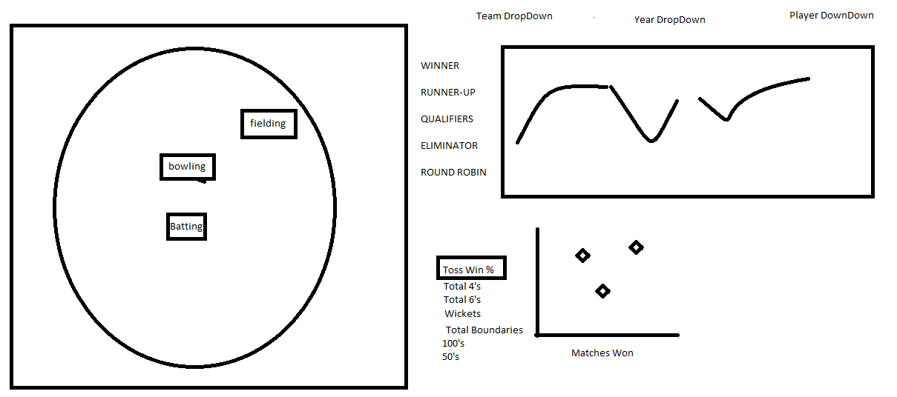

Seen below is our original design. Our goal was to create a visualization that was simple and informative enough to
engage someone who knows nothing about cricket but also provide in depth analysis for fans of cricket.
Coming out of our initial design session, we knew that portraying the field itself would be critical in setting the
context for our audience as many have likely not seen a field before. Also, our users likely are not aware of the
different standings a team might end with. So to address that, the top right has an ordinal ranking of the possible
outcomes of a team's cricket season. Our group goal was, once armed with the first two context visualizations of the
cricket field and the possible season results, our users have an idea of what a cricket field is and what the most
desirable season outcomes are. Once the user has this context, additional supporting visuals should allow them to
explore the metrics tracked for cricket teams and begin to answer questions like: Which stats are important for a
winning cricket team? Which stats correlate with winning matches? How has a team improved or worsened over time?
In which statistical categories has the team improved or worsened over time? How did the each team's metrics compare statistically
with other teams from the same season?

Cricket Field
As previously mentioned, the field itself is what sets the context of the dashboard. The target audience is likely one that would be familiar with a baseball field so the color encodings of green for grass and tan for a sandy area should clue our user in that this is the field that cricket is played on.
Two primary activities take place in a cricket match: batting and bowling. Therefore, the space where these two activities occur is labeled on the cricket field. Within batting and bowling there are several relevant statistics. To help the user with context, the performance in each stat is encoded based on the team's performance relative to other teams in the league during the same season. The details of the exact statistics for each metric are also presented for inspection.
Colors for encoding performance were chosen starting with Color Brewer. We had four categories to encode in a diverging fashion that had to be overlaid on top of a green field. After trying some different options in from Color Brewer, the blue to red diverging scheme felt the most intuitive.
Team Final Ranking by Season (Line Graph)
Like any sport, finishing in first is the most desirable outcome. In India Premier League Cricket, there are 8 possible final positions and those are presented to the user in the form of a line graph. This allows the user to see at a glance how the team's final positions have trended over many seasons. This also pairs well with the measure spark lines because the user can see if each individual metric trend shares a similar pattern as the season outcom.
Measure Spark Lines by Season (Bar Chart)
We knew that we wanted our users to be presented with the different measure possibilities without only having the option to select them in filters. We also had a limited amount of space and many measures. Therefore, we chose small bar charts to represent the performance over time encoded with the same colors as the field. The user may hover over any measure and it will change the field to encode by the measure that they hovered over; the hover will change the season filter as well.
Matches Won vs. Selected Measures by Season (Scatter Plot)
As a group we wanted a user to be able to see how different team metrics correlated with success. Therefore, we created a scatter plot that plots a measure on the y-axis and the number of matches one and plots each season. This visual allows the user to explore the different metrics and their correlation with success. Also, the scatter shares the same encodings as the rest of the dashboard.